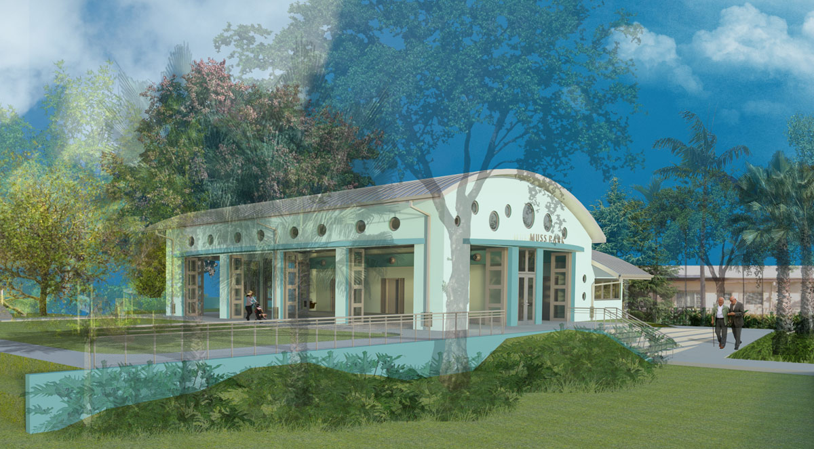
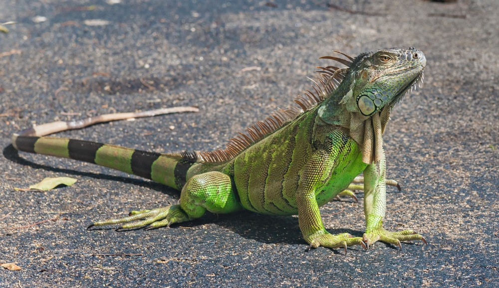
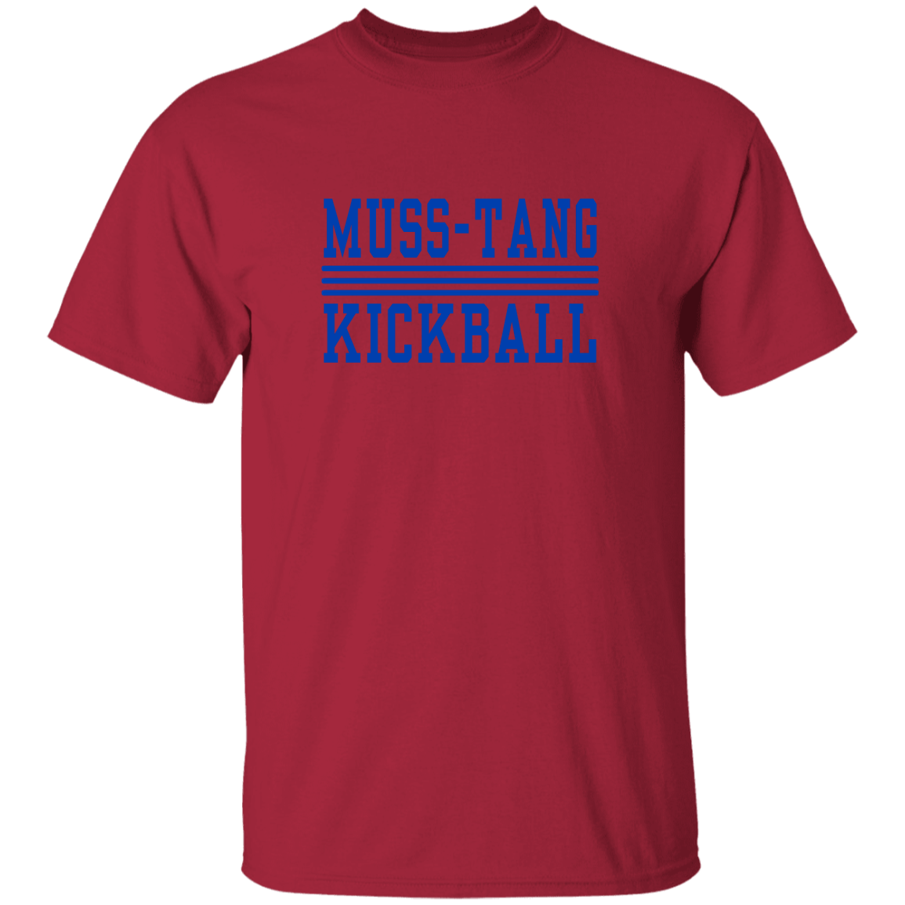

Located on the peninsula of Miami Beach is what some people call a heaven, some call it the Parthenon of Miami Beach Parks, the Château de Chase Avenue. I am talking about the extrodinary, astonishing, magnificent place called Muss Park. A 2,000 square feet pavillion that was constructed to attain LEED gold-certification, located right next to the beautful Biscayne Waterway is where the MUSS-TANGS call home. The MUSS-TANGS are a kickball team, but they are not no ordinary team. They are a team filled with unique individuals each with a peculiar and remarkable talents that you will not find anywhere. You haven't seen a collective this prominent since the last Avengers film.
From all the people who enter Muss Park we have a group that never chooses to leave. They are the ride-or-die residents of the park. Some see them as a disturbance but we embrace there spirit and commitment to the park, traits that resonate with members of the MUSS-TANGS! I am talking about the one and only un-official official mascot of the Muss Park Mustangs...I am talking about....THE....IGUANA!
Like all great teams, merchandise will be on the way. Im talking coffee mugs, metal straws, hoodies, shirts, baby bibs, tank tops, and possible Supreme and Louis Vuitton collaborations on the way. We are not your regualar kickball team we are different!
